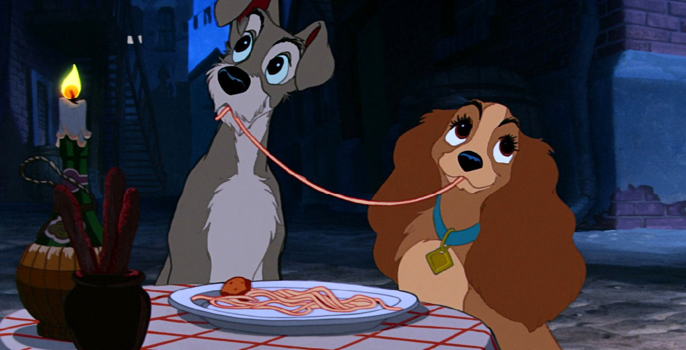
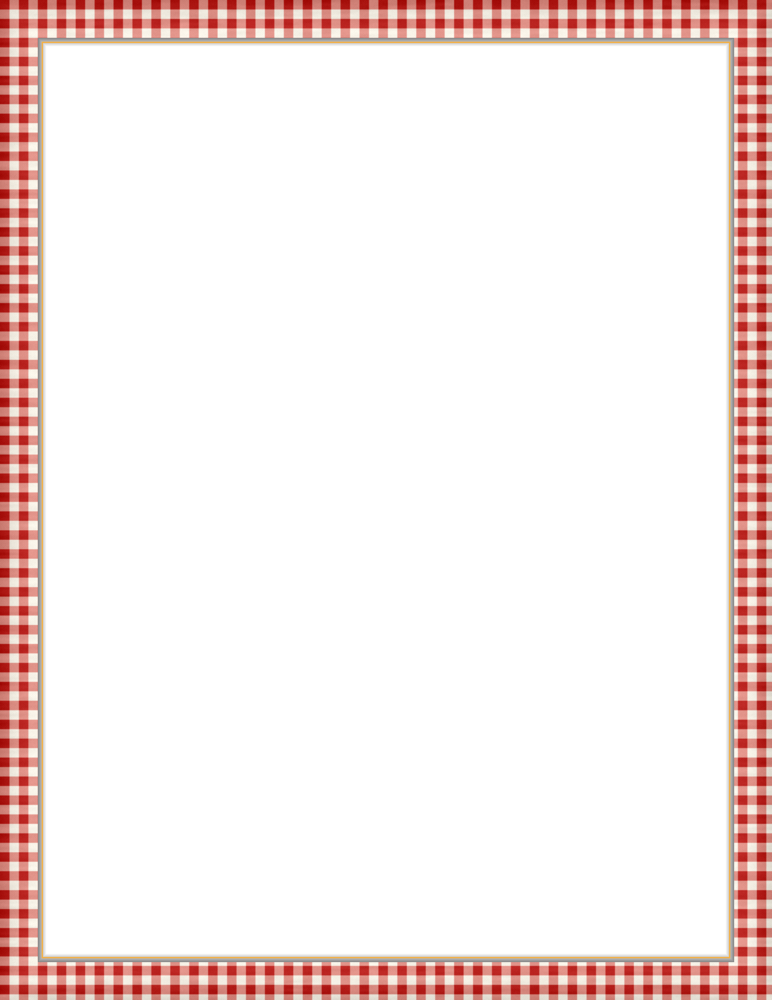

Ristorante italiano, supper till late
Tony's
Spaghetti every night. The best table is out back.

Out back, by the barrels. One plate, one candle.Regulars at the back door eat free
Joe's kitchen
To Begin

Garlic bread.10
Italian loaf, parsley butter, parmesan, baked crisp at the edges.
Antipasto for two.40
Salami, provolone, olives, artichoke hearts, roasted red peppers, torn bread.
Breadsticks.05
Long and salted, in a crock on every table.
Every night
Specialty
Spaghetti & meatballs.35
Beef and pork meatballs, slow tomato and basil. Save the last meatball for your sweetheart.
For two, on one plate, .55
Reserved
PARTY OF 2
Back door, by the barrels. Candle lit.
Butch and the lady
